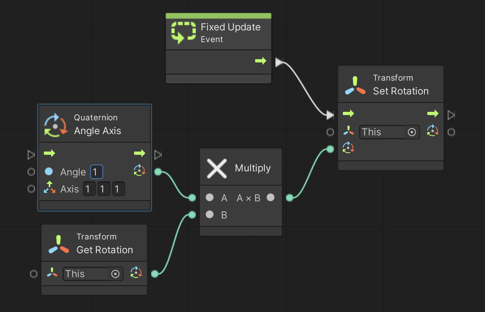

次はゲームオブジェクトを移動させましょう。
ゲームオブジェクトの回転方法には「クォータニオン(Quaternion)を使う方法」と「トルクを与えて物理的に回転する方法」があります。
ここではクォータニオンを使う方法について説明します。
演習を行う前に新しいシーンを作り、箱を作成します。
アセットフォルダの Scenes フォルダの中にシーンを新規作成し、シーン名を「Qt Scene」にする。背景色は任意で構わない
新規作成したシーンへ移動する
ヒエラルキー右クリック → 3D Object → Cube で箱を新規作成し、名前を「HAKO」、Position を (0,0,0) にする
またゲームオブジェクトを回転させるためにはスクリプトを作る必要があるので、こちらを参考にして Visual Scripting のセットアップもします。
Scripts フォルダの中に入り、空いている部分を右クリックしてメニューを表示し、Create → Visual Scripting → Script Graph を選ぶ
Scripts フォルダ内に「New Script Graph」というアセットが出来るので「Qt Script」に名前を変更する
HAKO に Script Machine コンポーネントをアタッチする
Script Machine の Graph の None と書いてあるセルに Qt Script をドロップする
X、Y、Z 軸の回転角度を直に指定してゲームオブジェクトを回転させるとジンバルロックが起きる危険性がありました。
そこで CG や 3D ゲームなどで物体を回転させたい場合はクォータニオン(または四元数)という特殊な数字を使って回転させる必要があります。
具体的にはクォータニオンを物体の現在の回転角度にかけるとその物体が回転します。
そこでまずはクォータニオンを作る必要があります。
Unity にはクォータニオンを作るユニットが色々用意されていますが、今回は最も基本的な Quaternion Angle Axis ユニットを使ってみたいと思います。
この Quaternion Angle Axis ユニットには回転角度(Angleに度で指定)と回転軸(Axis に 3次元ベクトルで指定)をセットする欄がありますので、そこに好きな値を入力することでクォータニオンを作ることができます。
そしてこのユニット出力を Transform Get Rotation ユニットからの出力に掛けて、その値を Transform Set Rotation ユニットへの入力とすることで回転軸を中心にゲームオブジェクトが回転を始めます。
では早速図1を実行してください。
すると右斜め上方向を軸にしてグルグル回転し始めると思います。
回転したら回転軸の方向を変えたり、回転角度を変えたり(マイナスにすると逆回転します)して試して下さい。
図1. 回転スクリプト

また前ページの様に適当な変数を用意して Quaternion Angle Axis ユニットの Angle にセットしてあげたり、コントローラと組み合わせたりするのも良いでしょう。
例えば図 2 の様な感じでしょうか。
図2. コントローラを使ってゲームオブジェクトを回転する例

ここから先は少し難しい話なので分からなければ飛ばしても結構です。
ただし Unity の物理演算機能を使いこなすためには大事な知識ですので興味のある人は是非トライして下さい。
クォータニオンは複素数を4次元に拡張した特殊な数字です。
ただクォータニオンをこのページだけで解説するのは無理なので別の場所に解説ページを用意しました。
詳しくはそちらの方を参照して下さい。